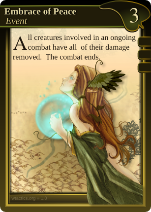

Every deck should contain at least 60 cards, as follows:
Every player composes his/her pile of cards (army deck) of whichever cards he/she wants, within the limits of the loyalty restrictions mentioned below. Usually you would want to have prepared a deck and be done with the building of it before you sit down to play a game.
Each card has it’s own unique identification number and a version that precedes it at the bottom right. These are the card number and card version numbers, and they’re very important if you always want to stay up to date or compete with other players. The card number for a card wont ever change. Any other info on the card may however become a target for revision, and, those revision will be reflected by the cards current version number. Huge changes in card versions are always announced at the site and well in advance before people are allowed to compete with them. For casual players this isn’t really that important - play the way you all agree on.
It’s allowed to have 4 copies of a card in the deck. A card is only considered to be an instance of itself if it has the same card number and/or card name. Two cards are only equivalent if they share both card & version number.
The deck building process is vital for the outcome of the game. In it the decisions about your play style and possibilities are decided, directly affecting how well you could fare against your opponent. As the game proceeds you will draw a given number of cards from the deck almost every round. The deck is often shuffled and the player seldom knows what card(s) he/she will draw from it.
The back of all cards in a deck must look identical. Having somehow different backs is considered cheating and prohibited.
 The Loyalty Requirement determines which cards you can put in your deck from which factions. Most cards have one or several symbols in place in the top right corner below the faction logo & gold cost. These symbols indicate the card’s faction Loyalty Requirement that has to be matched or exceeded by your deck build for the card to be able to be part of your deck to begin with.
The loyalty requirement is a sum: The symbols are a graphical representation of a number and must be added together. I.e. three symbols would mean that the loyalty requirement for that card would be equal to 3, two symbols mean that the loyalty requirement is 2 and so on. Each faction has it’s own distinct type of loyalty pre-requisites. In the example to the right we’re looking at a Gaian card that has, as can be seen by the green symbols, a Gaian Loyalty pre-requisite.
To determine which factions and cards you may or may not put in your deck do the following:
This means that if you want to use one or more cards of a single faction that has a maximum loyalty requirement of:
As a result decks in WTactics can only be composed of 1 to 3 factions, and one could say that there in theory is a primary, secondary and up to a tertiary faction within a deck.
Example:
Notice: If a card lacks a Loyalty Requirement it may be played freely in any deck regardless of the above rules or other factions already present in the deck.